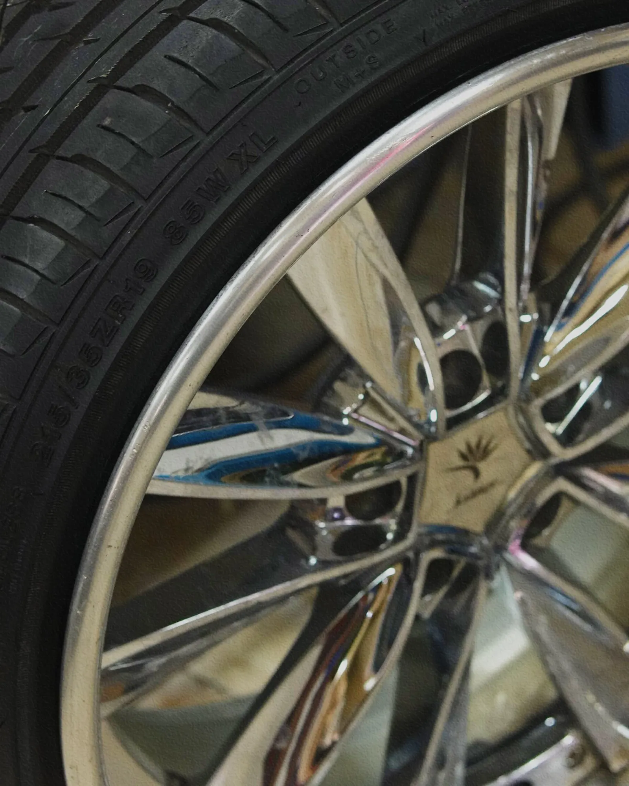
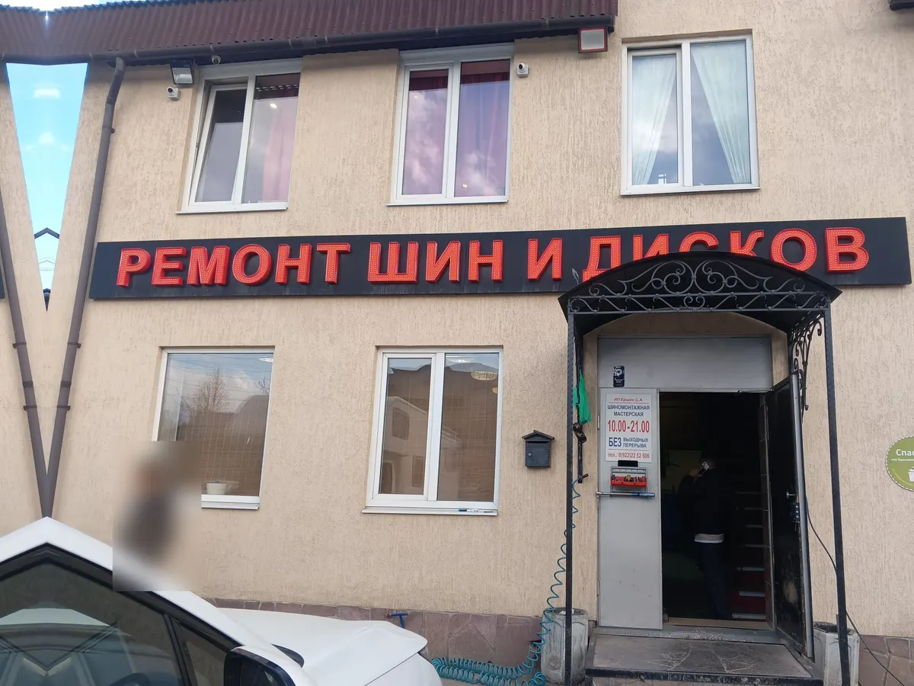
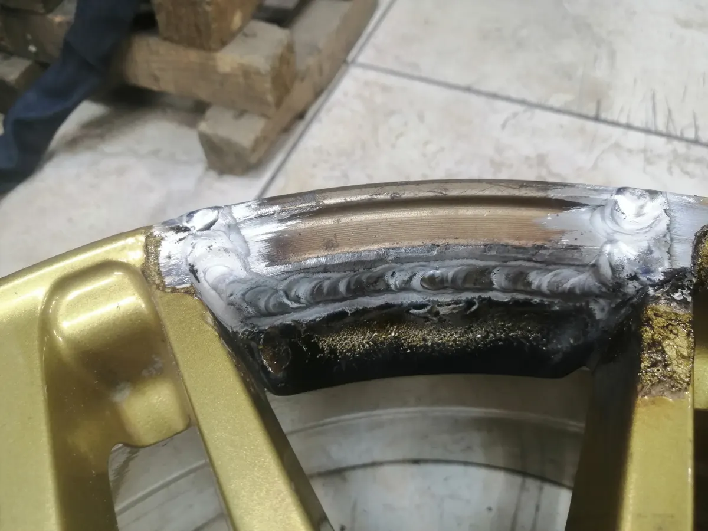
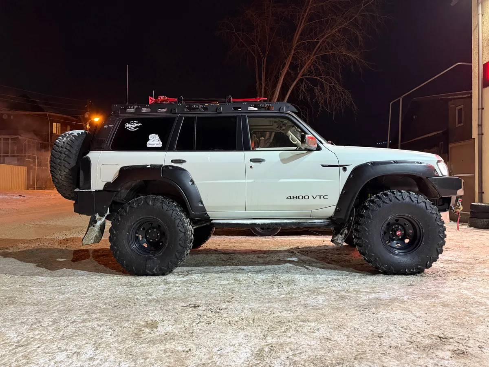

Шиномонтаж, ремонт дисков, хранение шин
Ремонт шин и дисков в Екатеринбурге – переобуем, поправим, заварим
Хасановская, 65. Ежедневно 10:00–21:00 без выходных. Правка, сварка и покраска дисков, переобувка, хранение шин. Запись по телефону.
- Правка, сварка аргоном и покраска дисков
- Хранение шин и комната ожидания
- Ежедневно 10:00–21:00, без выходных

Услуги и цены
Прайса на карточке в Яндекс Картах нет. Цену на вашу работу уточняйте по телефону.
Шины
- Шиномонтаж, переобувкауточнить
- Балансировкауточнить
- Ремонт проколауточнить
- Вулканизацияуточнить
- Шиповка шинуточнить
- Хранение шинуточнить
- Утилизация шинуточнить
- Мотошиномонтажуточнить
Диски
- Правка дисковуточнить
- Прокатка дисковуточнить
- Сварка аргономуточнить
- Алмазная проточка дисковуточнить
- Реставрация дисковуточнить
- Покраска дисковуточнить
- Детейлинг колёсуточнить
Как приехать
- 01
Позвоните
+7 (912) 290-50-49. Запись по телефону; в сезон переобувки уточните, сколько придётся подождать.
- 02
Приезжайте на Хасановскую, 65
Ищите красную вывеску «Ремонт шин и дисков» над входом. Перед зданием есть небольшая парковка.
- 03
Подождите в комнате ожидания
По отзывам клиентов, из неё через окно видно мастерскую. Шины можно оставить на хранение.



Что у нас есть
Ремонт дисков, а не только шиномонтаж
На карточке: правка, прокатка, сварка аргоном, алмазная проточка, реставрация и покраска дисков. Клиенты пишут про правку и сварку дисков.
Берутся за большие колёса
Клиент привёз резину 40-го размера и пишет, что это единственное место в городе, где за такое берутся.
Комната ожидания и хранение шин
В отзывах о комнате ожидания 100 % положительных оценок (10 отзывов). Мойка колёс при переобувке – по отзывам клиентов.
Ожидание – 96 % положительных оценок
По 77 отзывам о времени ожидания. В сезон переобувки бывает очередь, поэтому звоните заранее.
Отзывы с Яндекс.Карт
«Самая колоритная шиномонтажка юго-западного района. Грамотная правка дисков, демократичный по цене шиномонтаж, опыт и мастерство на высшем уровне!»
Иван Федоров · 3 июня 2025
«Отличный шиномонтаж, пользовалась услугами много раз, ребята работают шустро, качественно. Всегда легко дозвониться, есть запись. Стоимость услуг адекватная, качество работ на высоте!»
Анна К. · 1 мая 2026
«Единственное место в городе, где берутся за большие колеса, за очень большие. Привез резину в 40-м размере, нужно было переобуть и установить тайерлоки. Ребята сделали все по красоте и даже от балансировали нормально.»
Юрий Гартунг · 12 января 2025
Отзывы с карточки на Яндекс.Картах, без правок.
Приезжайте на Хасановскую, 65
- Адрес
- Хасановская ул., 65, Екатеринбург
- Часы
- Ежедневно 10:00–21:00, без выходных
- Телефон
- +7 (912) 290-50-49